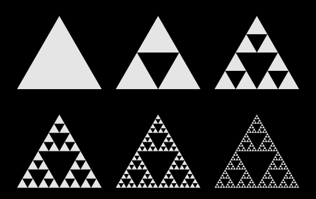

Met behulp van platonische lichamen kan je grootschalige ruimtelijke structuren creëren met gedeeltelijk fractale eigenschapen. Hiervoor plaats je op de hoeken van een dergelijk lichaam kleinere kopieën van zichzelf. Door dit proces te herhalen verkrijg je verschillende structuren. Als we dit toepassen met een tetraëder, verkijgen we een beroemde fractaal, namelijk de Sierpinski-tetraëder.
In het programma kun je het object roteren door erover te slepen met je vinger.
|
 |
De tweedimensionale Sierpinski-driehoek
en zijn iteratieve constructie.